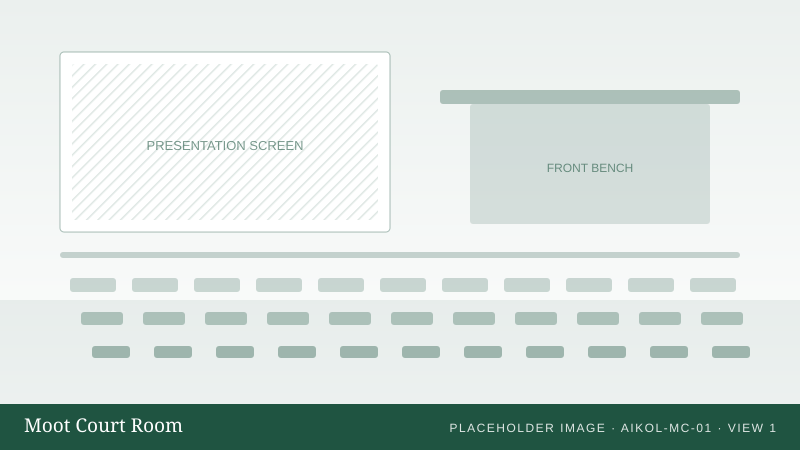
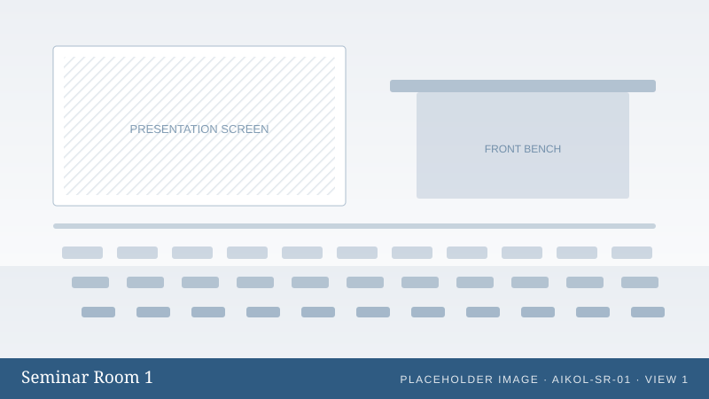
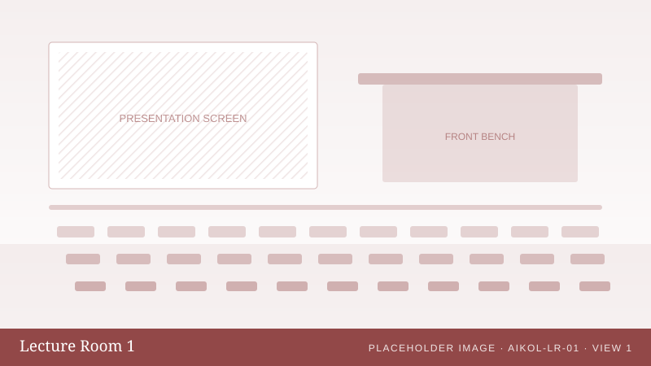
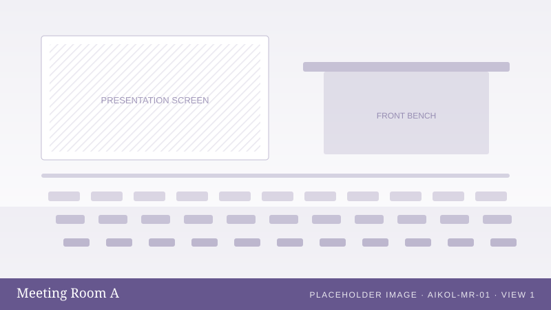
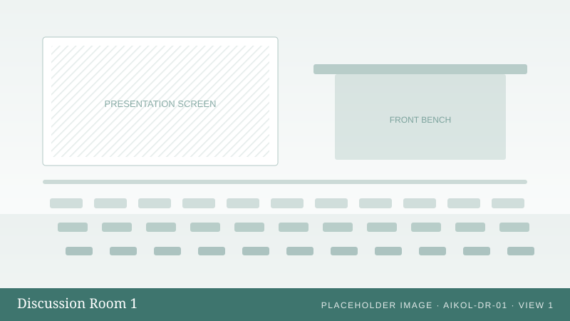
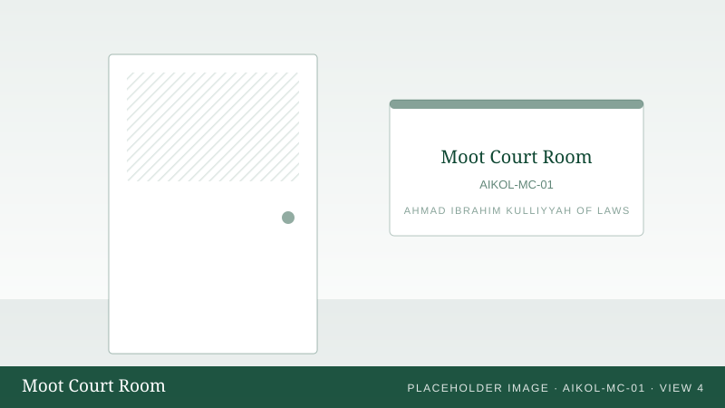
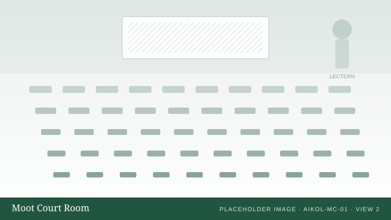
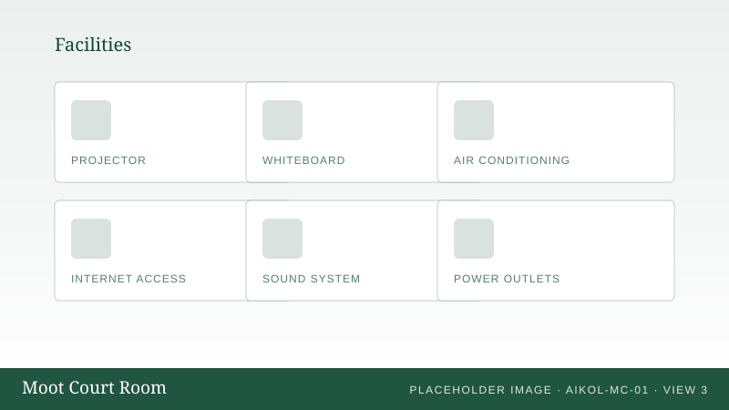

Executive Summary
The Ahmad Ibrahim Kulliyyah of Laws manages a number of shared venues — the moot court, lecture rooms, seminar rooms, meeting rooms and discussion rooms — that are used daily by students, lecturers and staff. This proposal recommends replacing the present manual arrangement with a single online system in which every venue, every booking and every decision is recorded in one place.
What is being proposed
A web-based booking system for Kulliyyah venues and vehicles, accessible from any browser on a computer or mobile telephone. A member of the Kulliyyah signs in, sees which venues are free at the time they need, submits a booking request in a single form, and follows its progress on screen. The Kulliyyah office reviews requests from an administrative screen, approves or rejects them with a recorded reason, and has immediate access to the full booking history and to usage reports.
What it changes
Users see free and occupied periods themselves instead of asking the office.
The system refuses any request that overlaps a confirmed reservation of the same venue.
Every request, approval, rejection and cancellation is retained and searchable.
Why it is worth doing
- Less administrative effort. The office stops acting as a diary, a message channel and a conflict checker, and instead reviews requests that the system has already validated.
- Fewer disputes. When two groups believe they have the same room, the record shows who booked it, when and with whose approval.
- Better information for management. Which venues are heavily used, which are not, and how demand varies through the academic year become straightforward questions to answer.
- Transparency for users. A requester can see the status of their request and the reason for any rejection without contacting anyone.
What it costs
The proposed technology is entirely free and open-source software: Django, Bootstrap, PostgreSQL and Git. There are no licence fees and no subscription products. The only genuine cost is hosting, and if IIUM can provide server space the recurring cost may be nil. Section 15 sets out the full position.
Problem Statement
2.1 The assumed present workflow
Current process Assumed
- User decides a venue is needed Student, lecturer or staff member
- User contacts the office to ask whether the room is free In person, by telephone or by message
- Office checks a diary, a spreadsheet or a paper record Kulliyyah office
- User completes a booking form Paper or document file
- Form is submitted and queued for a decision Kulliyyah office
- User waits for confirmation Duration not visible to the user
- User collects the key or arranges access Office or custodian
- Venue is used; the record ends there No structured history
Proposed process Proposed
- User signs in to the system Any browser, any device
- User views venues and real-time availability No enquiry needed
- User selects venue, date and time Conflicts are refused immediately
- User submits the request with its purpose Single online form
- Office reviews and decides where approval is required Reason recorded
- User sees the confirmed booking and its reference Status visible at all times
- Booking is retained as history for reporting and audit Automatic
Steps and hand-offs in each process
Illustrative dataFigure 2.1 — Counted from the workflow diagrams above. These are structural counts of the proposed design, not measurements of AIKOL activity, and no claim is made about time saved.
2.2 Difficulties arising from a manual arrangement
| Difficulty | Consequence | How the system responds |
|---|---|---|
| No real-time view of availability | Users must ask before they can plan; the office answers the same question repeatedly | Availability is shown on every venue page |
| Risk of double booking | Two groups arrive at the same room; one session is disrupted | Overlapping reservations are rejected by the system |
| Booking information is fragmented | Records sit in messages, forms and personal notes | One database holds every booking |
| Delay between request and confirmation | Users cannot commit to arrangements | Status is visible; venues that need no approval confirm at once |
| High administrative workload | Staff time is spent on coordination rather than review | Validation and conflict checking are automatic |
| Difficulty retrieving past bookings | Questions about earlier use are hard to answer | Search and filter across the full history |
| Limited audit capability | It is unclear who approved what, and when | Every administrative action is logged |
| No utilisation information | Decisions about facilities rest on impression | Reports on usage per venue and per period |
| Inconsistent records | Forms are completed differently by different people | Structured fields with server-side validation |
2.3 Confirmed requirements and assumptions
Confirmed requirements Confirmed
Derived from the project brief and treated as settled:
- Users must be able to browse venues, view details and check availability.
- Users must be able to submit, view and cancel their own bookings.
- Administrators must be able to manage users, venues, images and bookings.
- Double bookings must be prevented.
- Booking history must be retained and reportable.
- Bulk import, export and configurable retention must be supported.
- The system must remain low-cost, simple and maintainable.
Assumptions requiring confirmation Assumption
Used provisionally so that design work can proceed; each is a question in section 24:
- Students may book at least some venues themselves.
- Certain venues require approval and others do not.
- One level of approval is sufficient.
- Operating hours are broadly 8:00 a.m. to 6:00 p.m., varying by venue.
- Bookings are made in whole or half hours.
- Room keys are managed outside the system at first release.
- Email notification is not required in the first release.
Project Objectives
| No. | Objective | How the system meets it |
|---|---|---|
| 1 | Centralise booking activity | A single system of record for all Kulliyyah venues |
| 2 | Provide real-time visibility of availability | Availability shown on venue pages and in the booking form |
| 3 | Simplify booking submission | One online form replacing enquiry, paper form and follow-up |
| 4 | Reduce administrative workload | Automatic validation, conflict checking and record keeping |
| 5 | Prevent scheduling conflicts | Overlap rule enforced in the application and in the database |
| 6 | Support approval where required | Per-venue approval setting with recorded decisions |
| 7 | Allow authorised cancellation | Configurable cancellation rules for users and administrators |
| 8 | Maintain reliable booking history | Records are never deleted by ordinary operations |
| 9 | Improve room utilisation | Usage reporting per venue and per period |
| 10 | Provide management reporting | Dashboard indicators, trends and exportable data |
| 11 | Strengthen governance and accountability | Audit log of every administrative action |
| 12 | Support AIKOL's digital transformation | A working institutional service that other processes can follow |
| 13 | Maintain a cost-efficient architecture | Free and open-source components throughout |
| 14 | Remain easy to maintain and extend | One conventional Django application, documented and tested |
Users and Roles
Two roles are proposed for the first release. A third, optional role is described so that management can decide whether it is genuinely needed.
- Sign in with a Kulliyyah account
- Browse venues and view venue details
- Check availability before requesting
- Submit a booking request
- View own bookings and their status
- Cancel eligible bookings
- View own booking history
- Update basic profile information
- Everything a standard user can do
- Create, edit, activate and deactivate users
- Create and edit venues and venue photographs
- Approve, reject and cancel bookings
- Search the full booking history
- Configure system settings
- Perform bulk import and export
- Run retention and archiving operations
- View reports and the audit log
4.1 Should there be a separate Approver role?
A separate Approver — able to decide on booking requests but not to manage users, venues or system settings — is straightforward to add. Whether it is worth adding depends on how AIKOL actually works.
| Reasons to include it | Reasons to leave it out |
|---|---|
|
|
An Approver may approve, reject and cancel bookings, and nothing else. User management, resource management, the facility list, system settings, retention and the database reset all remain with the Administrator. That separation is the entire purpose of the role — delegating approval without delegating administration — and building it now is cheaper than retrofitting permission checks later.
A person's role is held separately from their affiliation: whether they are a student, a lecturer or a member of staff. A lecturer may also be an approver, and vehicle eligibility follows the affiliation while approval rights follow the role. One combined field could not express that.
Scope of the Proposed System
Authentication
Sign in, sign out, password reset, role-based access to every screen.
Venue management
Venue records, facilities, operating hours, rules, photographs and availability status.
Booking management
Submission, conflict prevention, approval, rejection, cancellation and history.
User management
Accounts, roles, activation and deactivation, access reset.
Reporting
Dashboard indicators, booking volume, venue utilisation and exports.
Data management
Bulk import, export, retention policy, archiving and audit log.
5.1 Deliberately excluded from the first release
- IIUM single sign-on integration Decision 24: the system authenticates its own users. No integration is planned.
- Calendar integration with Outlook or Google
- QR code check-in and room access
- Equipment reservation beyond key custody
- Vehicle classes other than cars
- Fuel and maintenance scheduling
- A separate mobile application
- Advanced analytics and any AI feature
Each remaining exclusion is a deliberate decision to keep the first release small enough to deliver, test and operate reliably. None requires an architectural change to add later; section 22 explains how.
Where the Difference Is Felt
| Activity | Current (assumed) | With the proposed system |
|---|---|---|
| Checking whether a room is free | Ask the office and wait for a reply | Open the venue page and read the availability strip |
| Requesting a venue | Complete a form and deliver it | Submit an online form in under a minute |
| Avoiding a clash | Depends on the office noticing it | The system refuses the overlapping request |
| Knowing the outcome | Follow up until told | Status shown on the user's own screen |
| Cancelling | Notify the office, which may or may not be recorded | Cancel in the system; the slot is released immediately |
| Finding last semester's bookings | Search through files and messages | Filter the booking list by date, venue or status |
| Reporting to management | Compiled manually when requested | Available on the dashboard at any time |
The Proposed Interface
The screens below are taken from a working prototype that accompanies this report. They show the intended appearance and structure of the finished system. All names, venues and bookings shown are fictional, and venue photographs are placeholders.
The prototype is interactive: open the prototype to click through the screens.
7.1 Sign in
Room and Vehicle Booking System
Check availability, submit booking requests and follow their status in one place.
- Real-time venue availability
- No paper booking forms
- Automatic conflict prevention
Figure 7.1 — Sign-in screen. Branding shown is a placeholder pending official AIKOL/IIUM brand assets.
7.2 User dashboard
Your next booking

Upcoming bookings
| Venue | Date | Time | Status |
|---|---|---|---|
| Moot Court Room | 16 Aug | 2:00 PM | Approved |
| Seminar Room 1 | 19 Aug | 10:00 AM | Pending |
| Discussion Room 1 | 22 Aug | 4:00 PM | Approved |
Figure 7.2 — The user dashboard shows what the user needs first: their next booking and anything awaiting a decision.
7.3 Venue listing





Figure 7.3 — Venues are browsed visually, with search and filters by type, capacity and facility.
7.4 Venue details


Venue information
| Location | Level 2, AIKOL Main Building |
| Capacity | 80 persons |
| Type | Moot Court |
| Hours | 8:00 AM – 6:00 PM |
| Approval | Required |
Facilities
Availability this week
Figure 7.4 — The venue page carries everything a requester needs: photographs, capacity, facilities, rules, operating hours and current availability.
7.5 Booking form
Booking details
Booking summary
| Venue | Moot Court Room |
| Date | 16 Aug 2026 |
| Time | 2:00 – 4:00 PM |
| Attendees | 24 |
| Approval | Required |
Existing bookings that day
Figure 7.5 — Availability is checked as the form is completed, so a clash is reported before the request is submitted rather than after.
7.6 My bookings
| Reference | Venue | Date | Time | Status | Action |
|---|---|---|---|---|---|
| BK-2026-0031 | Moot Court Room | 16 Aug | 2:00 PM | Approved | Cancel |
| BK-2026-0044 | Seminar Room 1 | 19 Aug | 10:00 AM | Pending | Cancel |
| BK-2026-0018 | Seminar Room 2 | 09 Aug | 9:00 AM | Completed | Details |
| BK-2026-0009 | Meeting Room B | 02 Aug | 2:00 PM | Cancelled | Details |
| BK-2026-0004 | Lecture Room 1 | 26 Jul | 11:00 AM | Rejected | Details |
Figure 7.6 — Cancelled and rejected bookings remain visible. A rejection carries the reason recorded by the approving officer.
7.7 Administrator dashboard
Monthly booking volume
Requests awaiting approval
| Moot Court Room | 16 Aug | Pending |
| Lecture Room 1 | 17 Aug | Pending |
| Seminar Room 1 | 19 Aug | Pending |
Recent activity (audit log)
| Booking approved — BK-2026-0031 | Mohd Hafiz | 2 min ago |
| Venue updated — Conference Room set to maintenance | Siti Rohani | 1 hr ago |
| Bulk import — 58 user records | Mohd Hafiz | 3 hrs ago |
Figure 7.7 — The administrative dashboard answers the day's operational questions and records every action taken.
Venue Information
Each venue record is proposed to carry the following information.
| Field | Purpose | Example Fictional |
|---|---|---|
| Venue name | Shown throughout the system | Moot Court Room |
| Venue code | Stable identifier for imports and reports | AIKOL-MC-01 |
| Building and floor | Helps users find the room | AIKOL Main Building, Level 2 |
| Description | Explains what the venue is suited to | Formal moot court chamber for advocacy training |
| Capacity | Validates the expected attendance | 80 persons |
| Venue type | Grouping for filters and reports | Moot Court |
| Facilities | Lets users filter by what they need | Projector, microphone, sound system |
| Operating hours | Limits the times that may be selected | 8:00 AM – 6:00 PM |
| Approval required | Determines whether a request is auto-confirmed | Yes |
| Booking restrictions | Rules such as maximum duration or eligible roles | Maximum 4 hours |
| Venue rules | Displayed before booking | No food or drink in the chamber |
| Status | Removes a venue from booking without deleting it | Active / Under maintenance |
| Main image and gallery | Lets users recognise the room | One main photograph, several additional |
Facilities recorded
- Projector
- Microphone
- Smart television
- Whiteboard
- Computer
- Internet access
- Air conditioning
- Sound system
- Video conferencing
Booking Workflow and Conflict Prevention
9.1 Booking lifecycle
Figure 9.1 — Where a venue is configured not to require approval, a new booking enters the Approved state directly. Completed is applied automatically once the booked period has passed.
| Status | Reserves the venue? | Meaning |
|---|---|---|
| Pending | Yes | Submitted and awaiting a decision. The slot is held so that two people cannot request it at once. |
| Approved | Yes | Confirmed. The venue is reserved for the requester. |
| Rejected | No | Declined with a recorded reason. The slot is released. |
| Cancelled | No | Withdrawn by the requester or an administrator. The record is kept; the slot is released. |
| Completed | No | The booked period has passed. Retained as history. |
9.2 Preventing double bookings
This is the central business rule of the system. For a given venue and date, a new booking conflicts with an existing one when the two periods overlap at any point:
new_start < existing_end and new_end > existing_startapplied only to existing bookings whose status is Pending or Approved. Rejected and cancelled bookings do not reserve the venue.
| New request | Overlaps? | Why |
|---|---|---|
| 10:00 – 12:00 | Blocked | Identical period |
| 11:00 – 13:00 | Blocked | Starts before the existing booking ends |
| 10:30 – 11:00 | Blocked | Falls entirely inside the existing booking |
| 09:00 – 13:00 | Blocked | Surrounds the existing booking |
| 08:00 – 10:00 | Allowed | Ends exactly when the existing booking starts |
| 12:00 – 14:00 | Allowed | Starts exactly when the existing booking ends |
Where the rule is enforced
- In the browser, as the user completes the form, so that a clash is visible immediately. This is a convenience only and is never trusted.
- On the server, when the request is submitted and again when it is approved, inside a database transaction that locks the venue's bookings for that date.
- In the database, through a constraint on the venue, date and time range for active bookings, so that even a defect elsewhere in the software cannot create an overlap.
9.3 Cancellation
Cancellation must not remove information. When a booking is cancelled the record remains, its status becomes Cancelled, the reason and time are recorded, and the venue becomes available again. The proposed rules are configurable rather than fixed in the software:
| Setting | Proposed default | Note |
|---|---|---|
| Users may cancel pending bookings | Yes | No decision has been made yet |
| Users may cancel approved bookings | Yes, subject to notice | Question 12 |
| Cancellation notice required | 24 hours before start | Question 13 |
| Administrators may cancel at any time | Yes | Reason recorded in the audit log |
| Cancellation reason | Optional for users, recorded for administrators | — |
Reporting for Management
The dashboard is intended to answer the questions the Kulliyyah asks regularly, not to become an analytics platform. The indicators proposed are: total venues, today's bookings, upcoming bookings, pending approvals, bookings this month and cancellations this month.
Example monthly booking volume
Illustrative dataFigure 10.1 — A hypothetical academic year, showing the pattern the report would reveal: peaks in the middle of each semester and troughs during examination and holiday periods. These are invented numbers used to show the shape of the report, not AIKOL measurements.
Example venue utilisation
Illustrative dataFigure 10.2 — Bookings per venue over a hypothetical year. A report of this kind supports decisions about which rooms need better equipment and which are under-used. Invented figures.
Exportable data
Any filtered list — bookings, venues or users — can be exported to CSV for use in a spreadsheet, so that management is never dependent on the system's own charts for a particular analysis.
Handling a Large Volume of Records
The system is expected to accumulate records for many years. It must remain fast when the booking table holds hundreds of thousands of rows, and it must never load an entire table into memory in order to draw a screen.
Example growth of stored booking records
Illustrative dataFigure 11.1 — An illustrative projection at roughly 1,200–1,500 bookings per year. Even at ten times this rate the design below remains comfortable for PostgreSQL.
| Measure | What it means in practice |
|---|---|
| Database indexes | Indexes on the fields actually used to search and filter, so that queries do not scan the whole table. Section 18 sets out the strategy. |
| Pagination | Every list screen fetches one page at a time — typically 10 to 25 rows — never the whole table. |
| Server-side filtering | Search and filters are applied in the database query, not in the browser. |
| Efficient queries | Related records (venue, requester) are fetched together in one query rather than one query per row. |
| Bulk operations | Imports and cleanups use batched statements rather than one statement per record. |
| Transactions | Operations that change several records either complete entirely or leave nothing behind. |
| Archiving | A retention policy moves very old records out of the active table, keeping day-to-day operation fast. |
Bulk Data Import and Export
Entering hundreds of users or several years of historical bookings one screen at a time is not practical. The system therefore accepts CSV files, which any officer can produce from a spreadsheet.
Import workflow
- Download the template for the record type Users, venues or historical bookings
- Upload the completed CSV file Maximum 10 MB
- The file is validated before anything is written Format, required fields, duplicates
- A preview is shown with errors marked by row Nothing has been saved yet
- The administrator confirms the import Valid rows only
- Records are inserted in one transaction All or nothing
- A summary is shown and written to the audit log Imported, skipped, by whom
Validation performed before import
- Required columns are present
- Email addresses are well formed
- Roles and statuses are recognised values
- Capacities and dates are valid
- Records already in the system are detected as duplicates
- Rows repeated within the same file are detected
- Historical bookings reference an existing user and venue
- Overlapping historical bookings are reported
The import screen is demonstrated in the prototype: open the data management screen and choose Use sample file, which deliberately contains invalid rows.
Export
Booking records, venue lists and user accounts can be exported to CSV. Exports are produced on the server in batches so that a large export does not exhaust memory, and are limited to the data the requesting administrator is authorised to see. Passwords are never exported in any form.
Data Retention, Archiving, Backup and Safe Deletion
13.1 Retention policy
Management sets how long booking records are held in the active database.
AIKOL confirmed 7 years, for audit purposes (decision 19). The period is stored as a
configurable setting, so it can be changed later without a software release.
Retention does not delete anything by itself. It makes older records eligible for a cleanup that
an administrator must review and confirm. Seven years of Kulliyyah bookings is a small dataset:
retention exists here for governance, not to keep the database manageable.
| Option | Recommended | Behaviour |
|---|---|---|
| Export and delete | Confirmed | Records are written to a CSV file, the file is verified against the number of records selected, and only then are the records removed from the database. Decision 20. |
| Archive | Alternative | Records are copied to an archive table before being removed from the active table. Retained as an option, but export is the confirmed default. |
| Permanent deletion | Restricted | Records are removed with no archive copy. Available only to the highest administrator level and only where institutional policy permits. |
13.2 How a cleanup runs
- The retention policy identifies records older than the cut-off Nothing is changed yet
- The number of affected records is displayed and logged The administrator sees the count before acting
- A database backup is taken Automatic, before the first batch
- Records are archived or exported according to the policy Copy verified before removal
- Records are deleted in batches of 1,000 Each batch in its own transaction
- The outcome is written to the audit log Who, when, how many
An administrator can preview the eligible records at any time without running anything. A cleanup that would permanently delete records requires a typed confirmation naming the number of records affected.
13.3 Backup
| Measure | Proposal |
|---|---|
| Scheduled backup | A full database backup each night, retained for 14 days |
| Weekly backup | One backup per week retained for 8 weeks |
| Before major changes | A backup is taken before any migration or bulk deletion |
| Storage location | Outside the application directory, and preferably on separate storage |
| Restore procedure | Documented, and tested at least once before the system goes live |
13.4 Full database reset
A command to clear the entire database is useful during development, testing and migration. Because it is destructive, it is deliberately kept separate from retention and surrounded by safeguards:
- Available only to the highest administrator level
- Disabled by default in the production configuration
- States plainly what will be destroyed, with record counts
- Requires the phrase
DELETE ALL DATAto be typed in full - Requires a backup to be taken first
- Never appears among ordinary administrative actions
- Is written to the audit log
Cost-Efficient Technology Strategy
Every component proposed is free and open-source, widely used, and maintainable by any competent developer. The guiding rule is to use the simplest technology that reliably meets the requirement.
| Layer | Recommendation | Why |
|---|---|---|
| Backend | Python + Django | Mature, free and open source. Authentication, permissions, an administrative interface, database migrations and protection against common web attacks are built in, so much less code must be written and maintained. |
| Frontend | Django templates + Bootstrap 5 | No separate frontend application to build, deploy or keep in step. One codebase, one deployment, responsive on mobile devices. A React or Vue interface would add significant complexity for no benefit this system requires. |
| Database (development) | SQLite | Requires no server; a developer can start work immediately. |
| Database (production) | PostgreSQL | Free, reliable and well suited to concurrent use and large tables. It also supports the range constraint that guarantees no overlapping bookings at the database level. |
| Charts | Plain HTML and CSS; Chart.js only if needed | The charts required are bar charts and simple comparisons, which HTML and CSS draw well with no dependency, no download and no library to update. Chart.js remains available at no cost should richer charts be needed later. |
| Icons | Bootstrap Icons | Free, open source, and served from the application rather than an external network. |
| Images | Local storage with server-side compression | Venue photographs are few and small. Paid image hosting is unnecessary. |
| Version control | Git | Free, standard, and essential for handing the project to another developer. |
| Web server | Nginx + Gunicorn | The conventional free deployment for a Django application on a Linux server. |
14.1 Approaches deliberately not taken
| Not proposed | Reason |
|---|---|
| A separate React or Vue frontend | Doubles the codebase and the deployment for an interface that is mostly forms and tables. |
| Microservices | Introduces network complexity and failure modes that a single Kulliyyah system does not need. |
| A message queue for imports | Only justified if testing shows imports are too slow to run directly. It can be added later if measurement demands it. |
| Paid cloud services | Creates a recurring cost and a dependency on a commercial provider for a system that can run on one modest server. |
| Artificial intelligence features | The business problem is scheduling and record keeping. AI would add cost and unpredictability without solving it. |
Estimated Cost
| Component | Preferred option | Software cost | Note |
|---|---|---|---|
| Backend framework | Django | RM 0 | Open source (BSD licence) |
| Frontend | Django templates + Bootstrap | RM 0 | Open source (MIT licence) |
| Database | PostgreSQL | RM 0 | Open source |
| Charts | HTML/CSS, or Chart.js | RM 0 | Open source |
| Icons | Bootstrap Icons | RM 0 | Open source |
| Web server | Nginx + Gunicorn | RM 0 | Open source |
| Version control | Git | RM 0 | Open source |
| Development environment | Local machine | RM 0 | No cost to the Kulliyyah |
| SSL certificate | Let's Encrypt | RM 0 | Free certificates renew automatically |
| Hosting | Self-provided VPS | Recurring | Confirmed: not IIUM ITD. A genuine recurring cost. See section 16 |
| Domain | Self-provided domain | Recurring | Confirmed: not an IIUM subdomain. An annual renewal |
| Backup storage | External storage, off the application server | Recurring | Decision 21. Small; database backups compress well |
| Outbound email | SMTP relay | To confirm | Needed for registration verification and booking confirmations |
No prices are quoted here. Commercial hosting prices change and vary by provider and region, and a figure that proves wrong at procurement would be worse than none. Actual prices should be obtained when the provider is chosen — which, together with who pays, is one of the two operational items still open in section 24.
Costs that are real but not monetary
- Development effort — approximately 18 weeks as set out in section 20.
- Venue information and photographs — Kulliyyah staff time to compile.
- Administrator training — a short session, supported by written guidance.
- Ongoing maintenance — periodic security updates to Django and the operating system.
Hosting Strategy
Development
Runs on a developer's own computer with SQLite. No cost, no server, no institutional dependency.
Demonstration
A temporary deployment for user acceptance testing, on a free tier or a small server. Suitable for review only — no real bookings should depend on it.
Production
A modest self-provided Linux VPS. One server is sufficient for this system's expected load. Confirmed as not IIUM-hosted.
This has a consequence worth stating plainly to management. Operating-system patching, firewall rules, TLS certificate renewal, and verifying that backups actually restore all become this project's responsibility. No institutional IT department performs them in the background. These are modest tasks for one server, but they are ongoing, and they need a named owner rather than an assumption.
Which provider, which specification, who pays, and where external backup storage lives are the two operational items still open in section 24. Neither blocks development.
A caution about free hosting tiers
Several providers offer free hosting for small applications. These are appropriate for demonstration but not for a system the Kulliyyah depends on: free tiers are withdrawn or changed at the provider's discretion, often suspend applications that are idle, and rarely guarantee that data is retained. The report distinguishes deliberately between free software — which is permanent and safe to rely upon — and free hosting, which is neither.
Proposed Technical Architecture
A single Django application organised into modules — a modular monolith. One codebase, one deployment, one database.
Figure 17.1 — The whole system. There is no separate frontend application, no message broker and no external service dependency.
Why a monolith rather than services
The modules above share the same data and are used by the same people at the same time. Separating them into independent services would introduce network calls, partial failures and deployment coordination — real costs, in exchange for scaling properties that a single Kulliyyah's booking system will never need. Keeping the modules clearly separated within one application preserves the ability to split them later should that ever become necessary.
Proposed Database Design
| Table | Holds | Key fields |
|---|---|---|
users | Accounts and roles | id, name, email, password_hash, role, status, created_at, updated_at |
venues | Bookable venues | id, name, code, description, building, floor, location, capacity, venue_type, facilities, status, approval_required, opening_time, closing_time, created_at, updated_at |
venue_images | Photographs per venue | id, venue_id, image_path, display_order, created_at |
bookings | Every booking request | id, booking_reference, user_id, venue_id, booking_date, start_time, end_time, purpose, attendee_count, status, rejection_reason, cancellation_reason, approved_by, approved_at, cancelled_at, created_at, updated_at |
booking_archive | Records past the retention period | Same shape as bookings, plus archived_at |
audit_logs | Administrative actions | id, user_id, action, entity_type, entity_id, description, created_at |
system_settings | Configurable rules | key, value, updated_by, updated_at |
18.1 Configurable settings
| Setting | Proposed default | Effect |
|---|---|---|
default_booking_duration | 2 hours | Pre-filled duration on the booking form |
maximum_booking_duration | 9 hours | Longest period a user may request |
advance_booking_limit | 90 days | How far ahead a booking may be made |
cancellation_cutoff | 72 hours (3 days) | Notice required to cancel an approved booking |
approval_required | Per venue | Whether a request needs a decision |
booking_retention_period | 7 years | When records become eligible for archiving |
18.2 Facilities: a separate table
This report originally proposed storing facilities as a structured field on the venue record, on a stated rule: introduce a separate table only when a facility needs attributes of its own. That was correct while the list was nine fixed values defined in the software.
AIKOL then asked that administrators be able to add facilities themselves. The moment they can, each facility needs a stored display name, an ordering, an active flag and a note of whether it applies to venues, vehicles or both — attributes of its own. The rule's condition is met, so facilities become a table. This is the original rule working as intended, not a reversal of it.
The alternative would have been to keep the list in the software, which would mean a code release every time the Kulliyyah wanted to add "Hearing Loop" to a room. That is precisely what the design's preference for configurable settings over hard-coded values exists to avoid.
18.3 Indexing strategy
Indexes make reads fast and writes slightly slower, and each one occupies space. They are therefore proposed only where the system actually searches.
| Index | Table | Supports |
|---|---|---|
(venue_id, booking_date) | bookings | The conflict check and the venue availability screen — the most frequent query in the system |
(user_id, booking_date DESC) | bookings | "My bookings", newest first |
(status, booking_date) | bookings | Pending approval queue and status filters |
booking_date | bookings | Date-range reporting and retention cut-off queries |
booking_reference (unique) | bookings | Look-up by reference; guarantees references are unique |
email (unique) | users | Sign-in and duplicate detection during import |
code (unique) | venues | Venue look-up during import |
(entity_type, entity_id) | audit_logs | Retrieving the history of one booking or venue |
| Exclusion constraint on venue, date and time range | bookings | Database-level guarantee that two active bookings cannot overlap |
Security
The system holds names, email addresses and a record of who used which room and when. That warrants careful, proportionate protection — not the measures appropriate to a financial system.
| Measure | Implementation |
|---|---|
| Password storage | Hashed with a modern algorithm (PBKDF2 or Argon2) through Django's authentication system. Passwords are never stored or transmitted in readable form, and administrators cannot see them. |
| Authentication | Django's built-in authentication, with session expiry and secure, HTTP-only session cookies. |
| Authorisation | Every view checks the signed-in user's role. Administrative routes are unreachable for standard users, not merely hidden from the menu. |
| Ownership checks | A user can view and cancel only their own bookings; the check is on the record, not on the URL. |
| CSRF protection | Enabled on every form, as provided by Django. |
| XSS prevention | Template auto-escaping; user-supplied text is never rendered as markup. |
| SQL injection | All database access through the Django ORM with parameterised queries. |
| Server-side validation | Every rule enforced on the server. Browser validation is a convenience only and is never trusted. |
| Upload validation | Images only, permitted formats JPEG, PNG and WebP, maximum 5 MB, content type verified, files stored outside the executable path. |
| Transport security | HTTPS enforced; HTTP redirected. Free certificates renew automatically. |
| Destructive operations | Restricted by role, confirmed by typed phrase, preceded by a backup and written to the audit log. |
| Dependency updates | Django security releases applied promptly; the version in use is recorded in the project documentation. |
Implementation Roadmap
Ten phases over approximately 18 weeks. Phases overlap where work can proceed in parallel. The estimate assumes one developer working consistently and prompt responses to the questions in section 24.
Proposed schedule
EstimateFigure 20.1 — Indicative schedule. Phase 1 and Phase 2 are complete on delivery of this report and the accompanying prototype.
| Phase | Work | Deliverable |
|---|---|---|
| 1 | Discovery and management review | This report Delivered |
| 2 | UI prototype and requirement confirmation | Interactive prototype Delivered |
| 3 | Database and authentication | Schema, migrations, sign-in, roles |
| 4 | Venue management | Venue records, images, browsing, details |
| 5 | Booking system | Booking form, conflict prevention, approval workflow, tests |
| 6 | Administrative features | Booking, venue and user administration; audit log |
| 7 | Bulk data and reporting | CSV import and export, dashboard, retention |
| 8 | Testing and security review | Automated test suite, performance check with a large data set |
| 9 | User acceptance testing | Kulliyyah staff and student trial on demonstration data |
| 10 | Deployment and training | Live system, administrator guide, backup procedure |
The First Release
The first production release is defined so that it is genuinely useful on the day it is deployed, while remaining small enough to build and test properly.
Included First release
- Self-registration with IIUM email verification New
- Sign in, sign out and password reset
- Role-based access (user, approver, administrator) New
- User management with activation and deactivation
- Venue management with photographs
- Vehicle (car) management with photographs New
- Administrator-maintained facility list New
- Resource browsing, filtering and details
- Availability display
- Booking submission for venues and vehicles
- Multi-day vehicle trips New
- Recurring bookings New
- Conflict prevention with automated tests
- Approval and rejection with recorded reasons
- Booking on behalf of a user New
- Cancellation with a mandatory reason and a 3-day cutoff
- Key issue and return recording New
- Booking confirmation email New
- Booking history with search, filter and pagination
- Management dashboard and basic reporting
- CSV import and export
- Audit log
- Configurable retention with export
- Documented backup procedure to external storage
Not included
- IIUM single sign-on Not planned — decision 24
- Calendar integration
- QR check-in or room access
- Equipment tracking beyond key custody
- Vehicle classes other than cars
- Fuel and maintenance scheduling
- Mobile application
- Advanced analytics or forecasting
- Any AI feature
Two of these carry real schedule cost and management should know it. Recurring bookings are not a small feature: they need a series definition, conflict checking for every occurrence, sensible handling when only some dates clash, and the ability to approve or cancel a whole series. Email makes a mail server a dependency of ordinary operation rather than of sign-up alone. Neither changes the architecture, but neither was in the original estimate.
Possible Later Enhancements
| Enhancement | Effort | Depends on |
|---|---|---|
| Email notification | Low | An institutional mail relay and a decision on which events notify |
| IIUM single sign-on | Medium | Cooperation from the IIUM Information Technology Division |
| Recurring bookings | Medium | Rules for how a series behaves when one occurrence clashes |
| Calendar integration (Outlook / Google) | Medium | Institutional accounts and consent |
| QR check-in | Medium | A decision on whether attendance is to be recorded |
| Room key tracking | Medium | Confirmation of who holds keys today (question 16) |
| Equipment reservation | Medium | An equipment inventory |
| QR room access | High | Physical access control hardware |
| Mobile application | High | Evidence that the responsive website is insufficient |
| Advanced analytics and forecasting | High | Several years of accumulated data |
Each of these is additive. None requires the architecture proposed in this report to change, which is a deliberate property of the design.
Risks and How They Are Managed
| Risk | Likelihood | Response |
|---|---|---|
| Requirements differ from the assumptions in this report | High | Section 24 exists precisely to surface this before construction begins. Corrections cost days now, months later. |
| Venue information and photographs are slow to arrive | Medium | Identify the responsible officer early; the bulk import allows the venue list to be loaded from a spreadsheet in one operation. |
| Hosting is not resolved in time | Medium | Development and user acceptance testing do not depend on production hosting. Begin the enquiry with IIUM early. |
| Users continue booking through the office out of habit | Medium | Administrators can create bookings on behalf of users (question 14), so the record stays complete during transition. |
| Data loss | Low | Nightly backups, a backup before every destructive operation, and a restore procedure tested before go-live. |
| Accidental mass deletion | Low | Archiving by default, typed confirmation, record counts shown in advance, and the reset command disabled in production. |
| The developer becomes unavailable | Medium | Conventional framework, no unusual technology, documented codebase and schema, everything in Git. |
Items Requiring AIKOL Management Confirmation
These are the decisions that shape the system. All twenty-six have been answered by AIKOL, and the answers are recorded below. They are settled requirements, not proposals.
Access and eligibility
| No. | Question | Decision |
|---|---|---|
| 1 | Who may use the system — students, lecturers, staff, or a subset? | Everyone with an IIUM matriculation number or staff number. |
| 2 | May students reserve rooms independently, or only through a lecturer or society? | Students may book independently. Approval is granted on the strength of the reason and availability. |
| 3 | Which venues may students book? | All venues. |
| 4 | Which venues require approval, and which may be confirmed automatically? | All venues require approval by the administrator. No venue is confirmed automatically. |
| 5 | Who approves bookings? Is a separate Approver role needed (section 4.1)? | A separate Approver role is needed — for an Administrative Assistant, Executive Officer or Deputy Director to decide bookings when the main approver is away. |
| 6 | Is one level of approval sufficient, or is a second required for certain venues? | One level of approval is sufficient. |
Booking rules
| No. | Question | Decision |
|---|---|---|
| 7 | How far in advance may a booking be made? | 3 months (90 days) in advance. |
| 8 | What is the maximum duration of a single booking? | 9 hours. A longer occupation requires a second booking for the extra time. |
| 9 | What are the operating hours, and do they differ by venue? | 08:00 – 22:00. |
| 10 | Are weekend bookings permitted? | Yes. |
| 11 | Are bookings on public holidays and semester breaks permitted? | Yes. |
| 12 | May users cancel an approved booking themselves? | A user may cancel their own booking freely, up to 3 days before the booking date, giving a reason. Clarified with AIKOL: only approval is an administrator function; cancellation by the requester needs no approval. |
| 13 | What notice must be given for a cancellation? | 3 days before, with a reasonable excuse. A reason is mandatory. |
| 14 | Should administrators be able to create bookings on behalf of users? | Yes. |
| 15 | Are recurring bookings required in the first release? | Yes — required in the first release, so a whole semester's schedule can be entered at once. |
Resource access and information
| No. | Question | Decision |
|---|---|---|
| 16 | Who controls room keys or access cards at present? | The system administrator personally. There is no maintenance partner. |
| 17 | Should key collection and return be recorded in the system? | Yes. Recording key collection and return would help key management. |
| 18 | What user information should be stored — matriculation or staff number, department, telephone? | Per user: name, matriculation or staff number, telephone number. Per booking: remarks / purpose, time key taken out, time key returned. |
Records and data
| No. | Question | Decision |
|---|---|---|
| 19 | How long should booking records be retained (1, 3, 5, 7 years, or indefinitely)? | 7 years, for audit purposes. |
| 20 | Should records past that period be archived, exported, or deleted? | Exported — not archived in place, and never silently deleted. |
| 21 | Is a database backup required before any bulk deletion, and where should backups be stored? | Yes, a backup is required before any bulk deletion. Backups go to external storage. |
Infrastructure and ownership
| No. | Question | Decision |
|---|---|---|
| 22 | Can IIUM provide server hosting for the application? | No — hosting is self-provided. Confirmed after the review: the project provides its own VPS. |
| 23 | Can an IIUM subdomain be used (for example booking.aikol.iium.edu.my)? | No — the domain is self-provided. An IIUM subdomain will not be used. |
| 24 | Should IIUM authentication be integrated eventually, and if so when? | No IIUM authentication integration. The system implements its own sign-in using Django's built-in authentication. |
| 25 | Who will act as system administrator once the system is live? | the Kulliyyah system administrator. |
| 26 | Who will supply the venue list, rules and photographs? | the Kulliyyah system administrator — resource list, rules and photographs. |
Decisions taken after this review
Vehicle booking was added after section 24 was answered, and section 24 says nothing about it. The following decisions are the authority for vehicles, registration, confirmation email and the facility list. They carry the same weight as the answers above.
| Topic | Decision |
|---|---|
| Vehicle scope | Cars only in the first release. The design must not make other vehicle classes hard to add later. |
| Who may book a vehicle | Lecturers and staff only. A student cannot request a car directly; a lecturer or staff member books on their behalf under decision 14. |
| Trip length | Multi-day trips are permitted. A vehicle may be collected one day and returned another. A configurable setting caps the maximum trip length. |
| Driver | The requester drives. The booking records the driver's licence number and expiry, checked against the end of the trip. |
| Vehicle approval | Every vehicle booking requires approval, as with venues. |
| Registration | Self-registration, restricted to @iium.edu.my and @live.iium.edu.my addresses and confirmed by a verification email. One administrator cannot create accounts by hand for a whole Kulliyyah. |
| Matriculation number | Collected for documentation and reporting. It is not the sign-in credential — the email address remains the login field. |
| Booking confirmation email | Sent on submission, approval, rejection and cancellation. These are transactional messages about the recipient's own booking, so there is no opt-out in the first release. |
| Facility list | Maintained by administrators, who may create, rename and deactivate facilities without a software release. |
Conclusion and Recommended Next Steps
The AIKOL Room and Vehicle Booking System is a well-understood problem with a well-understood solution. It does not require novel technology, substantial expenditure or a large team. It requires an accurate description of how the Kulliyyah wishes to work, and a careful, conventional implementation of it.
What has been delivered in this phase
- This management review report, presentable on screen and printable to PDF
- A working interactive prototype of every proposed screen
- A recommended technology stack composed entirely of free and open-source software
- A proposed database design with a specific indexing strategy
- A data retention, archiving, backup and safe deletion strategy
- A defined first release and a phased implementation plan
- A list of 26 decisions required from management
Recommended next steps
- Review the prototype. Click through the screens and note anything that does not match how the Kulliyyah works.
- Answer the questions in section 24, or mark those that require further consultation.
- Confirm the venue list and identify who will supply photographs and rules.
- Begin the hosting enquiry with IIUM, since this has the longest lead time and does not depend on anything else.
- Authorise Phase 3 — database and authentication — so that construction can begin.